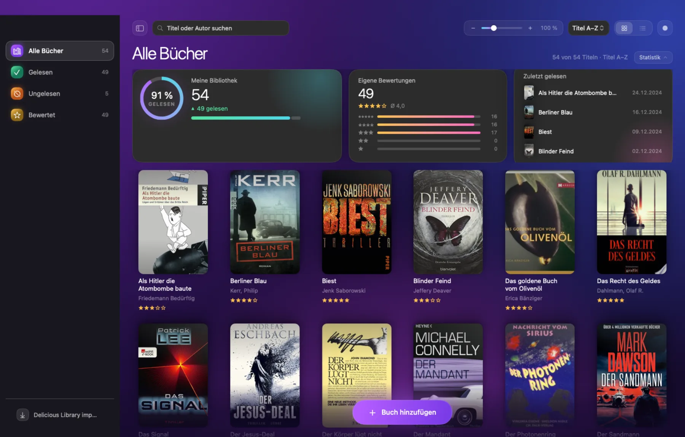
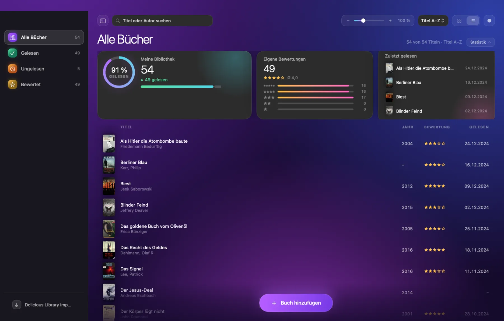
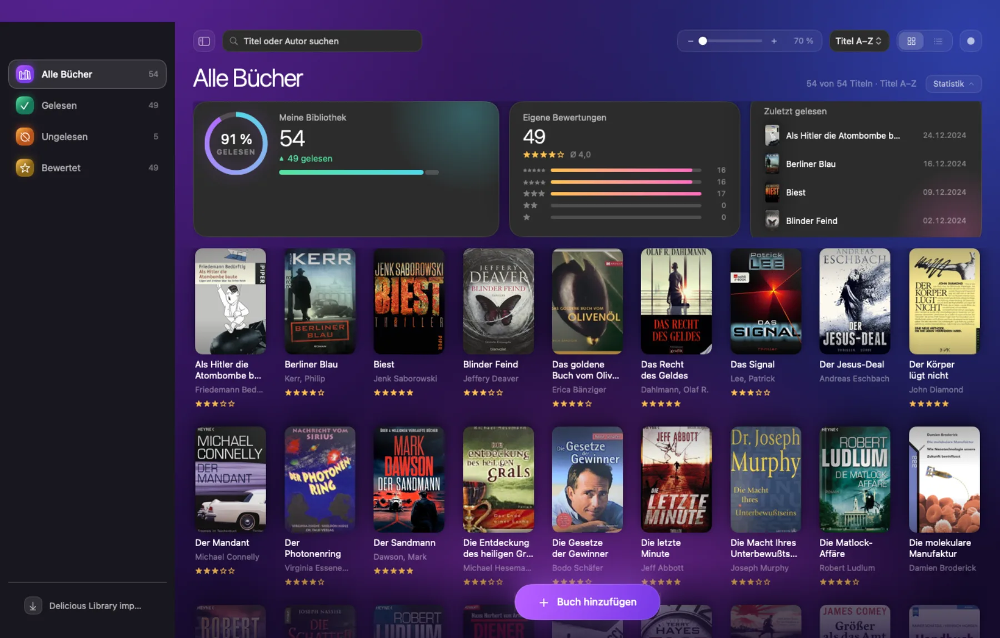

Die eigene Bücherwand,
endlich sortiert.
LibraryCompass katalogisiert physische Bücher: Barcode scannen, Titel und Cover aus freien Quellen holen, eigene Bewertung und Notiz dazu. Bewusst wenige Funktionen — ein aufgeräumter Nachfolger für Delicious Library.
macOS 14 oder neuer · Apple Silicon & Intel · MIT-Lizenz

Warum
Aus einem Regalproblem entstanden.
Delicious Library war jahrelang die Antwort auf die Frage „habe ich das Buch schon?" — und wurde dann eingestellt. Der Bestand lag als XML-Export auf der Platte. LibraryCompass ist die Antwort darauf: klein, lokal, ohne Konto, mit genau den zehn Feldern, die wirklich gebraucht werden.
Funktionen
Wenig, aber das richtig.
Jede Funktion existiert, weil sie beim Katalogisieren von rund 1.800 Büchern gefehlt hat.
Barcode scannen
Kamera auf den EAN-13-Code halten, fertig. Die Prüfziffer wird validiert, bevor irgendetwas nachgeladen wird. Das iPhone lässt sich als Continuity-Kamera nutzen und wird wegen des besseren Autofokus bevorzugt. ⌘K
Metadaten aus freien Quellen
Titel, Autor und Jahr kommen der Reihe nach von Open Library, der Deutschen Nationalbibliothek und Google Books. Die DNB ist dabei, weil deutsche Ausgaben in den internationalen Quellen oft fehlen. ⌘N
Import aus Delicious Library
Liest den plist-XML-Export ein, gleicht über die ISBN ab und läuft deshalb beliebig oft ohne Dubletten. Eigene Bewertungen und Notizen bleiben erhalten; Katalog-Ballast im Titel wird entfernt.
Eigene Bewertung, Notiz, Lesedatum
Fünf Sterne, ein Freitextfeld und ein Datum — mehr nicht. Jede Eingabe wird sofort gespeichert, es gibt keinen Speichern-Knopf. Statistikkarten zeigen Leseanteil, Notendurchschnitt und die zuletzt gelesenen Titel.
CSV-Export
Alle zehn Felder als RFC-4180-CSV, mit Byte-Order-Mark, damit Excel die Umlaute richtig anzeigt. Die eigenen Daten bleiben jederzeit mitnehmbar. ⌘E
Raster oder Liste, hell oder dunkel
Suche, Filter und Sortierung greifen bei rund 1.800 Titeln ohne spürbare Verzögerung — keine Animation steht zwischen Eingabe und Ergebnis. Coverzoom stufenlos, Erscheinungsbild folgt dem System oder wird von Hand gesetzt.
Ansichten
So sieht es aus.
Die Oberfläche ist deutsch. Umschalten des Erscheinungsbilds oben rechts wechselt auch diese Bilder.
Listenansicht
Jede Zeile mit Cover-Vorschau, Jahr, Bewertung und Lesedatum. Sortierbar nach Titel, Autor, Jahr, Bewertung oder zuletzt gelesen.

Detailbereich
Rechts das gewählte Buch: großes Cover, Eckdaten als Chips, darunter Sterne, Lesedatum und Kommentarfeld. Alles schreibt sofort auf das Buch.
Buch per ISBN
Wenn kein Barcode zur Hand ist: ISBN eintippen, Titel, Autor und Cover werden übernommen und das neue Buch direkt ausgewählt.
Zoom, stufenlos
Der Regler in der Werkzeugleiste skaliert die Cover von 70 bis 170 Prozent. Ganz klein passt die halbe Bibliothek auf den Schirm, ganz groß liest sich jeder Buchrücken.

Installation
Selbst bauen, in drei Schritten.
Es gibt bewusst keine fertige Programmdatei zum Herunterladen: ohne bezahltes Apple-Entwicklerprogramm ließe sie sich nicht notarisieren, und eine nicht notarisierte Datei aus dem Netz sollte niemand blind öffnen. Der Quellcode ist vollständig — bauen dauert unter einer Minute.
Xcode-Befehlszeilenwerkzeuge installieren, falls noch nicht vorhanden.
Projekt klonen und das Programmpaket bauen.
Nach „Programme" installieren und starten.
# Quellcode holen
git clone https://github.com/JoeMartinBTC/LibraryCompass.git
cd LibraryCompass
# bauen und installieren
./make-app.sh
./install-app.sh
# optional: Testlauf
swift testDie App wird mit einer Ad-hoc-Signatur versehen. Beim ersten Start nach einer Neuinstallation fragt macOS erneut nach der Kameraerlaubnis — das ist erwartet und in der Projektdokumentation beschrieben.
Unter der Haube
Klein gehalten, ordentlich gebaut.
SwiftUI und SwiftData, kein Netzwerkdienst, keine Fremdbibliothek. Der Kern ist als eigenes Paket getrennt und testgetrieben entstanden.
159 Tests
Import, Duplikaterkennung, Suche, Statistik und die Metadatenquellen sind abgedeckt — inklusive echter Netzabfragen.
Alles lokal
Eine SwiftData-Datei im Programmordner des Benutzers. Kein Konto, keine Synchronisierung, keine Telemetrie.
MIT-Lizenz
Benutzen, verändern, weitergeben — auch kommerziell. Ohne Gewährleistung, wie bei MIT üblich.